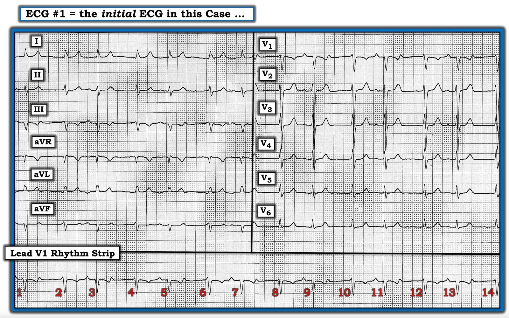
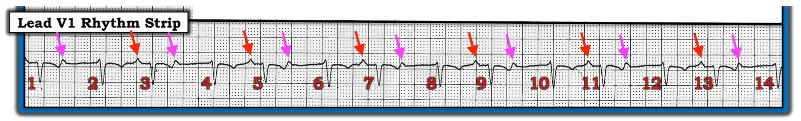
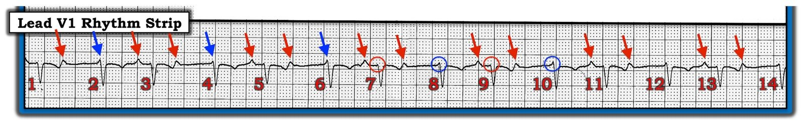
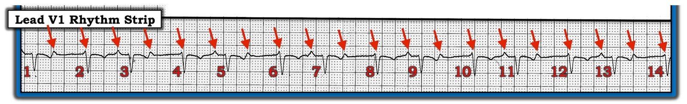
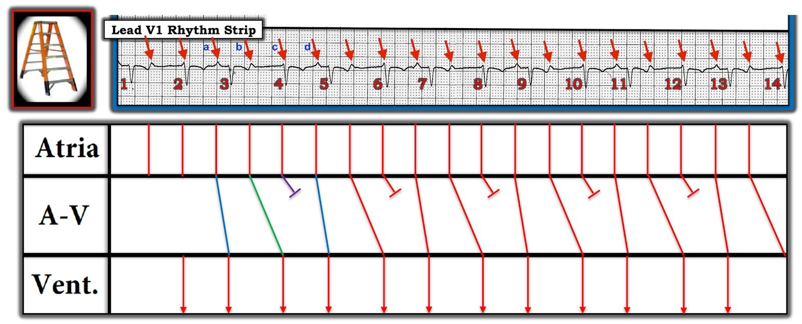
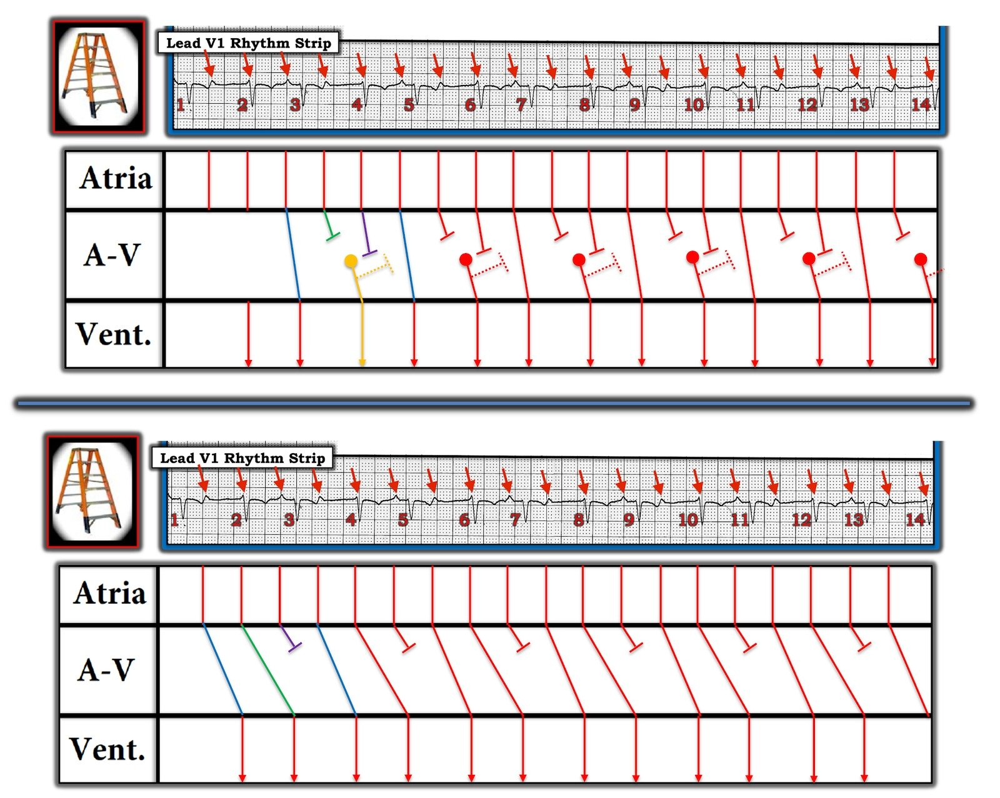

09/09/2020 — Có Wenckebach không? Một bệnh nhân cao tuổi bị ngã
Bản dịch tiếng Việt của bài "Is there Wenckebach? An Elderly Patient with a Fall" – Dr. Smith’s ECG Blog. Giữ nguyên toàn bộ 8 hình ảnh của bản gốc.
===================================
CA LOẠN NHỊP CỦA TÔI, bởi KEN GRAUER, MD (9/9/2020):
===================================
LỜI NÓI ĐẦU: Nhận biết sự có mặt (hay vắng mặt) của blốc AV là một vấn đề thường gặp trong y học cấp cứu. Ca này đặt người mới học, người đọc ở mức trung bình và người đọc giàu kinh nghiệm vào “thử thách” khi lần ra căn nguyên của nhịp thú vị này.
================================================
Điện tâm đồ trong Hình 1 được ghi ở một bệnh nhân cao tuổi, nhập viện vì ngã. Bệnh nhân được phát hiện thiếu máu nặng — nhưng không mất ổn định huyết động.
- Với bệnh sử này — bạn sẽ diễn giải điện tâm đồ trong Hình 1 NHƯ THẾ NÀO?
- Có blốc AV không? NẾU có — bạn sẽ mô tả rối loạn dẫn truyền NHƯ THẾ NÀO? NẾU không — nhịp là GÌ?
- Nhịp này cần ĐIỀU TRỊ GÌ?


SUY NGHĨ CỦA TÔI về điện tâm đồ #1: Đây là một bản ghi khó — ngay cả với người đọc giàu kinh nghiệm! Tôi sẽ đưa ra một Cách tiếp cận Từng bước để đánh giá điện tâm đồ 12 chuyển đạo này cùng dải nhịp chuyển đạo dài đi kèm.
XIN LƯU Ý: Người đọc ít kinh nghiệm có thể không theo kịp mọi khía cạnh trong phần giải thích của tôi. Điều đó không sao! — vì ca này có rất nhiều điều để học cho người đọc ở bất kỳ trình độ nào. Hãy theo được bao nhiêu thì theo. Ở gạch đầu dòng thứ 2 bên dưới — tôi đưa link tới phần ôn tập cách tiếp cận hệ thống dễ dùng của tôi để đọc nhịp. Dù thế nào — HÃY NHỚ đọc phần cuối bên dưới, trong đó tôi tóm tắt cách xử trí tối ưu cho bệnh nhân này. Còn với những ai đã giàu kinh nghiệm hơn — thử thách bắt đầu!
- Bất kể kinh nghiệm đọc điện tâm đồ của bạn ra sao — Hãy xem nhịp trước tiên! Việc này tốt nhất là tập trung vào dải nhịp V1 dài ở cuối bản ghi. (Việc đánh giá phần còn lại của điện tâm đồ 12 chuyển đạo nên để sau khi bạn đã xem nhịp).
- Trước đây tôi đã ôn lại Cách tiếp cận hệ thống của tôi để đọc nhịp (Xem đặc biệt bài đăng ngày 17 tháng Tám năm 2020). Nhưng bất kể bạn chọn xem thông số nào trước trong 5 Thông số MẤU CHỐT (“Hãy để ý các P, các Q & 3 chữ R” ) — có 3 Nhận xét cần được đưa ra ngay lập tức: i) Phức bộ QRS trong điện tâm đồ #1 hẹp — cho biết đây là nhịp trên thất; ii) Có sóng P; và, iii) Có Nhịp theo nhóm (tức là có một kiểu lặp đi lặp lại các nhóm 2 nhát — với khoảng R-R ngắn-dài xen kẽ, thấy rõ nhất ở dải nhịp V1 dài).
ĐIỂM THEN CHỐT (PEARL) #1 — Như chúng tôi đã nhấn mạnh nhiều lần — sự có mặt của nhịp THEO NHÓM thường có nghĩa là đang có một dạng hiện tượng Wenckebach nào đó. Có nhiều loại hiện tượng Wenckebach, trong đó Wenckebach AV (tức là blốc AV độ 2 thể Mobitz loại I) là thường gặp nhất.
- LƯU Ý: Điều này không có nghĩa là mỗi lần thấy nhịp theo nhóm — thì nguyên nhân sẽ là Mobitz I. Ví dụ, nhịp đôi hay nhịp ba nhĩ cũng tạo ra nhịp “theo nhóm”. Dù vậy — Việc nhận ra nhịp theo nhóm trong bản ghi cụ thể này đã giúp tôi, chỉ trong vài giây, bắt đầu tập trung chú ý vào khả năng cao là có Wenckebach AV!
Có Nhịp Sóng P Đều Không?
Tôi thấy hữu ích khi gỡ rối các rối loạn nhịp phức tạp bằng cách tìm sóng P ở một thời điểm sớm trong quá trình phân tích. Tôi thích bắt đầu bằng việc xác định trước những sóng lệch mà tôi biết chắc là sóng P. Trong Hình 2 — các mũi tên ĐỎ chỉ những chỗ mà ta có thể chắc chắn có sóng P rõ ràng trên dải nhịp chuyển đạo V1 dài mà ta đã thấy ở Hình 1.
- Các mũi tên HỒNG trong Hình 2 làm nổi bật những sóng lệch hòa vào phần cuối sóng T ở chuyển đạo V1 này — nhưng gần như chắc chắn cũng là sóng P, vì kích thước và hình dạng của chúng hầu như giống hệt các sóng P rõ ràng được đánh dấu bằng mũi tên ĐỎ.
- LƯU Ý: Xem hoạt động nhĩ ở chuyển đạo II của điện tâm đồ #1 (trong Hình 1) — các sóng P mà ta thấy rõ trước các nhát #3, 5 và 7 ở chuyển đạo II đều dương, dù biên độ rất nhỏ. Điều này gợi ý nhịp nền là nhịp xoang — nhất là khi khoảng PR đứng trước các nhát #3, 5, 7, 9, 11 và 13 trên dải nhịp V1 dài là NHƯ NHAU.
- LƯU Ý: Vì sóng P ở chuyển đạo V1 dễ thấy hơn nhiều so với bất kỳ chuyển đạo nào khác trên bản ghi 12 chuyển đạo — tôi dùng chuyển đạo V1 cho tất cả các Hình còn lại trong bài này.


ĐIỂM THEN CHỐT (PEARL) #2 — Đôi khi khó phân biệt blốc AV độ 2 với các nguyên nhân khác gây nhịp theo nhóm (như nhịp đôi nhĩ, blốc SA, khoảng ngưng xoang, v.v.). Để có blốc AV — nhịp nhĩ phải đều! (hoặc ít nhất gần đều, nếu có loạn nhịp xoang). Khi nhịp nhĩ rõ ràng là không đều — thì nhiều khả năng không có blốc AV. Vì vậy — tôi luôn đặc biệt chú ý để xác định XEM có sóng P nào đang ẩn hay không. Dùng compa đo giúp việc này dễ dàng hơn rất nhiều!
- GỢI Ý: Bạn sẽ không bao giờ đọc giỏi các rối loạn nhịp phức tạp trừ khi bạn thường xuyên dùng compa đo. Một khi bắt đầu dùng — bạn sẽ thấy mất ít thời gian hơn hẳn để tìm ra mối liên hệ giữa sóng P và phức bộ QRS mà nếu không có compa thì bạn sẽ không bao giờ nhận ra …
- Hãy xem Hình 3. Nếu bản ghi này có một nhịp nhĩ nền đều — thì chẳng phải ta nên chờ đợi có sóng P ở những chỗ tôi đặt mũi tên XANH LAM sao?
- Giờ hãy nhìn bên trong các vòng tròn XANH LAM ở chỗ khởi đầu các nhát #8 và 10. So sánh những gì bạn thấy — với những gì xuất hiện trong các vòng tròn ĐỎ ở chỗ khởi đầu các nhát #7 và 9. Chẳng phải khía nhọn nhỏ trong các vòng tròn XANH LAM “dò bước” khớp hoàn hảo với vị trí mà ta chờ đợi các sóng P xuất hiện đều đặn sao?


Như vậy — Dùng compa đo giờ cho phép ta “dò bước” ra các sóng P xuất hiện đều đặn suốt dải nhịp V1 dài (các mũi tên ĐỎ trong Hình 4).


ĐIỂM THEN CHỐT (PEARL) #3 — Nghi ngờ của tôi rằng nhịp này là một dạng blốc Wenckebach nào đó càng tăng thêm vì: i) Có nhịp theo nhóm rõ ràng (tức là các nhóm 2 nhát, với kiểu khoảng R-R dài-ngắn lặp đi lặp lại); ii) Nhịp là nhịp trên thất (tức là phức bộ QRS hẹp); và, iii) Có một nhịp nhĩ đều . Việc còn lại chỉ là làm sáng tỏ cơ chế. Vẽ một giản đồ bậc thang (laddergram) có thể giúp ích.
- Bên dưới, ở cuối phần Bình luận của tôi, tôi liệt kê một số link tới các rối loạn nhịp phức tạp, trong đó tôi vẽ các giản đồ bậc thang minh họa từng bước một.
- Để cho gọn — tôi chuyển thẳng tới câu trả lời đề xuất của tôi trong Hình 5.


Một Cơ chế Đề xuất: Có thể có hơn 1 cơ chế giải thích nhịp trong ca này. Dù vậy — tôi nghĩ cơ chế được trình bày trong giản đồ bậc thang ở Hình 5 là có khả năng nhất.
- LƯU Ý: Phần lớn trường hợp Wenckebach AV (tức là blốc AV độ 2, Mobitz I) — khoảng PR tăng dần dần qua các nhát liên tiếp cho đến khi một sóng P không được dẫn truyền. Tuy nhiên, đôi khi — cơ chế sinh lý đường dẫn truyền kép trong nút AV có thể đang hoạt động (Mani BC & Pavri BB: Dual AV Nodal Pathways Physiology — Indian Pacing Electrophysiol 14[1]:12-25, 2014). Khi điều này xảy ra — khoảng PR có thể thay đổi (tăng) đột ngột từ nhát này sang nhát kế tiếp do chuyển đột ngột từ dẫn truyền qua đường nhanh (cho khoảng PR ngắn hơn) — sang dẫn truyền qua đường chậm (làm khoảng PR kéo dài đột ngột). Tôi ngờ rằng đây là điều đang xảy ra trong Hình 5.
- Các nhát #1, 3, 5, 7, 9, 11 và 13 trong Hình 5 đều được dẫn truyền với khoảng PR bình thường ~0,18 giây. Các đường xiên XANH LAM ở Tầng Nút AV minh họa điều này, cho thấy các sóng P được ghi nhãn “a” và “d” được dẫn truyền xuống thất với khoảng PR bình thường.
- Sau khi sóng P ghi nhãn “a” được dẫn truyền bình thường để tạo ra nhát #3 (đường xiên XANH LAM thứ 1 ở Tầng Nút AV trong Hình 5) — khoảng PR tăng đột ngột (lên ~0,52 giây) đối với sóng P ghi nhãn “b” — sóng P này được dẫn truyền xuống thất với blốc AV độ 1 để tạo ra nhát #4 (minh họa bằng đường xiên XANH LỤC ở Tầng Nút AV).
- Sóng P kế tiếp trong chu kỳ (ghi nhãn “c”) không được dẫn truyền (đầu cụt màu TÍM).
- Sau đó chu kỳ bắt đầu lại — khi dẫn truyền chuyển trở lại đường nhanh hơn để dẫn sóng P ghi nhãn “d” xuống thất với khoảng PR bình thường, tạo ra nhát #5 (minh họa bằng đường XANH LAM thứ 2 trong Hình 5).
- Như vậy, trong Hình 5 — các nhát #2, 4, 6, 8, 10, 12 và 14 đều vẫn được dẫn truyền (vì các nhát này đều có khoảng PR đứng trước giống hệt nhau) — nhưng dẫn truyền đã chuyển sang đường chậm hơn trong nút AV (đó là lý do các nhát này được dẫn truyền với khoảng PR dài như vậy).
Tổng hợp lại tất cả — LÙI LẠI một chút, và xem các đường ĐỎ ở Tầng Nút AV của Hình 5.
- Giờ đây sẽ DỄ HƠN nhiều để nhận ra kiểu nhịp theo nhóm (group beating) lặp lại, trong đó mỗi nhóm gồm 3 sóng P và 2 phức bộ QRS — với khoảng PR tăng lên giữa nhát thứ 1 và thứ 2 của mỗi nhóm (thấy qua độ nghiêng tăng lên ở Tầng Nút AV) cho đến khi sóng P thứ 3 của mỗi nhóm không được dẫn truyền. Khoảng PR kéo dài dần cho đến khi một nhát bị rớt như vậy xác định rối loạn dẫn truyền này là blốc AV độ 2 Mobitz I (Wenckebach AV).
- Điểm MẤU CHỐT — Lý do khiến ví dụ Mobitz I này khó nhận ra hơn là vì “mắt” chúng ta không quen thấy những khoảng PR dài như ở đây mà vẫn dẫn truyền — và chúng ta cũng không quen thấy khoảng PR tăng rõ rệt và đột ngột như vậy từ nhát này sang nhát kế tiếp. Dù vậy — việc xem lại 3 đặc điểm nêu trên ở ĐIỂM THEN CHỐT (PEARL) #3 đã giúp tôi nghi ngờ mạnh Wenckebach AV chỉ trong vài giây khi nhìn thấy bản ghi này (dù tôi mất nhiều thời gian hơn hẳn để minh họa điều này bằng giản đồ bậc thang tôi vẽ ở Hình 5).
ĐIỂM THEN CHỐT (PEARL) #4 — Hãy nghi ngờ đường dẫn truyền kép trong nút AV có thể đang hoạt động bất cứ khi nào bạn thấy Wenckebach AV mà khoảng PR tăng rõ rệt một cách bất ngờ từ 1 nhát được dẫn truyền sang nhát kế tiếp.
- T.B. (P.S.): Tôi hoàn toàn thừa nhận rằng cơ chế tôi đề xuất cho giản đồ bậc thang ở Hình 5 không phải là giả thuyết duy nhất có thể. Ví dụ, thay vì nhát #3 — nhát #2 có thể là nhát được dẫn truyền đầu tiên trong nhóm khởi đầu này (với khoảng PR rất dài). Hoặc, có thể có kèm một nhịp bộ nối gia tốc, là lý do khiến các sóng P liên tiếp không được dẫn truyền. Đôi khi cách duy nhất để chứng minh cơ chế thực sự của một rối loạn nhịp phức tạp là theo dõi điện tâm đồ thêm và/hoặc thăm dò điện sinh lý EP (ElectroPhysiologic). Dù vậy — tôi tin rằng cơ chế tôi đặt giả thuyết ở Hình 5 đưa ra lời giải thích hợp lý nhất cho nhịp mà chúng ta thấy. Và, dù thế nào đi nữa — Wenckebach AV gần như chắc chắn là nguyên nhân gây ra nhịp theo nhóm mà chúng ta thấy trên bản ghi này!
QUAY LẠI với Hình 1: Giờ đây khi đã xác định được nhịp tim — chúng ta cần đánh giá phần còn lại của điện tâm đồ 12 chuyển đạo.
- Như đã trình bày ở đầu bài — bệnh nhân cao tuổi trong ca hôm nay được nhập viện sau một cú ngã. Bệnh nhân thiếu máu nặng, nhưng không mất ổn định huyết động.
- Về việc đọc bản ghi 12 chuyển đạo ở Hình 1 — có điện thế thấp ở các chuyển đạo chi. Trục lệch về bên trái — nhưng chưa đủ lệch trái để đạt tiêu chuẩn LAHB. Không có lớn buồng tim. Có một số thay đổi ST-T dẹt không đặc hiệu, có lẽ kèm ST chênh xuống nhẹ — nhưng những thay đổi này không có vẻ là cấp tính.
- XỬ TRÍ Lâm sàng: Bệnh nhân cao tuổi có triệu chứng, thiếu máu nặng này không biểu hiện thay đổi ST-T cấp tính. Mặc dù có blốc AV độ 2 Mobitz I — tần số thất chung vẫn hoàn toàn đủ (tần số thất trung bình ở Hình 1 khoảng ~80-90/phút) — và không có bằng chứng blốc AV “mức độ cao”. Do đó — tất cả những gì có thể cần là cân nhắc truyền máu + nỗ lực xác định (và điều chỉnh) nguyên nhân thiếu máu. Lúc này dường như không có chỉ định điều trị blốc AV.
Để Luyện tập thêm với Giản đồ bậc thang Từng-bước-Một:
- XEM Bình luận của tôi trong bài ngày 16 tháng Năm năm 2020 trên Dr. Smith’s ECG Blog.
- XEM Bình luận của tôi trong bài ngày 28 tháng Năm năm 2019.
- XEM Bình luận của tôi trong bài ngày 17 tháng Tám năm 2020.
- Với những ai muốn Video Ôn tập về Những điều cơ bản của blốc AV — Xin BẤM VÀO ĐÂY. Và, nếu bạn bấm vào SHOW MORE (bên dưới video trên trang You-Tube) — bạn sẽ thấy một Mục lục chi tiết có liên kết cho phép bạn nhảy tới bất kỳ phần nào về blốc AV mà bạn quan tâm.
================
LƯU Ý: Xin chân thành CẢM ƠN Dr. Giovanni Serafini & Dr. Viola Tallarico (người Ý) đã chia sẻ các bản ghi và ca bệnh này với chúng tôi!
================

PHẦN BỔ SUNG (9/9/2020):
Tôi rất vui mừng trước những bình luận về bài này từ 2 chuyên gia rối loạn nhịp quốc tế, đó là Dr. Adrian Baranchuk (qua thư trao đổi riêng với tôi) và Dr. Jerry Jones (Xem bình luận của “Double Down” = Jerry Jones bên dưới). Cả hai chuyên gia nổi tiếng này đều gợi ý thêm những cơ chế khả dĩ khác cho nhịp hấp dẫn của ca hôm nay.
- Tôi thích trích dẫn Rosenbaum, người đã nói: “Mọi rối loạn nhịp có lòng tự trọng đều có ít nhất 3 cách diễn giải khả dĩ.”
- Khi cân nhắc cách viết về ca này — tôi đã quyết định không làm “quá phức tạp” lời giải thích của mình bằng thêm các giản đồ bậc thang. Nhưng xin LƯU Ý rằng trong phần “T.B. (P.S.)” của ĐIỂM THEN CHỐT (PEARL) #4 (ở trên) — tôi đã ám chỉ tới những cơ chế khả dĩ khác cho nhịp này.
- Tôi thậm chí đã vẽ thêm 2 giản đồ bậc thang — nhưng ban đầu tôi quyết định không công bố chúng, vì sợ làm vấn đề trở nên quá phức tạp. Trước những bình luận sắc sảo của Dr. Baranchuk và Dr. Jones — tôi bổ sung vào Phần bổ sung này Hình 6 của tôi — trong đó tôi trình bày 2 giản đồ bậc thang mà tôi đã vẽ trước đó nhưng chọn không công bố. Tôi tin rằng 2 giản đồ bậc thang bổ sung này giải đáp được những băn khoăn của họ. Có lẽ còn nhiều khả năng khác nữa để giải thích nhịp này …
- Đôi khi cách duy nhất để chứng minh cơ chế thực sự của một rối loạn nhịp phức tạp là theo dõi điện tâm đồ thêm cho bệnh nhân hoặc thăm dò điện sinh lý EP (ElectroPhysiologic).
- Dù vậy — bất kể cơ chế nào trong số các cơ chế được đề xuất là “cơ chế thật” — ĐIỂM mà tôi muốn người đọc ở bất kỳ trình độ điện tâm đồ nào rút ra từ ca này là: ở đây có blốc AV — nhịp theo nhóm gợi ý một dạng nào đó của cơ chế Wenckebach — và, như tôi nhấn mạnh ở gạch đầu dòng cuối cùng có tiêu đề “Xử trí lâm sàng” — không có bằng chứng blốc AV mức độ cao, nên điều trị tối ưu trong ca này là cân nhắc truyền máu + nỗ lực xác định (và điều chỉnh) nguyên nhân thiếu máu — không cần điều trị đặc hiệu nào cho blốc AV vào lúc này!
Xin chân thành CẢM ƠN Dr. Baranchuk và Dr. Jones đã làm cho ca bệnh này thêm phần hấp dẫn!

